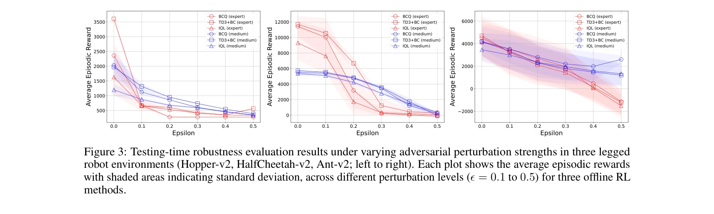
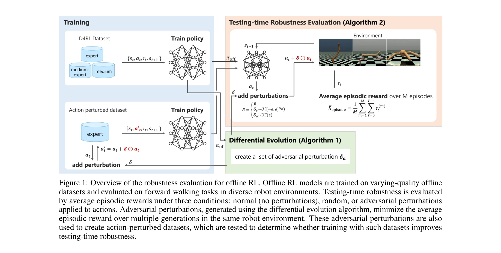

저자: Yogesh K. Dwivedi, Nir Kshetri, Laurie Hughes, Emma Slade, Anand Jeyaraj, Arpan Kumar Kar, Abdullah M. Baabdullah, Alex Koohang, Vishnupriya Raghavan, Manju Ahuja, Hanaa Albanna, Mousa Ahmad Albashrawi, Adil S. Al-Busaidi, Janarthanan Balakrishnan, Yves Barlette, Sriparna Basu, Indranil Bose, Laurence Brooks, Dimitrios Buhalis, Lemuria Carter | 날짜: 2024 | URL: https://arxiv.org/abs/2412.18781

Figure 3: Testing-time robustness evaluation results under varying adversarial perturbation strengths in three legged
본 논문은 오프라인 강화학습(Offline RL) 방법들의 행동 섭동(action perturbation)에 대한 견고성을 평가하며, 기존 방법들이 온라인 RL보다 더 취약함을 보여준다.
Figure 3: Testing-time robustness evaluation results under varying adversarial perturbation strengths in three legged

Figure 1: Overview of the robustness evaluation for offline RL. Offline RL models are trained on varying-quality offline
총평: 본 논문은 오프라인 RL의 실제 응용에 중요한 행동 섭동 견고성을 처음 다루었으며, 기존 방법들의 취약성을 명확히 입증했다. 다만 해결책 제시 부족과 시뮬레이션 환경 제한이 아쉬우나, 향후 견고한 오프라인 RL 개발을 위한 중요한 벤치마크 연구로 가치가 높다.